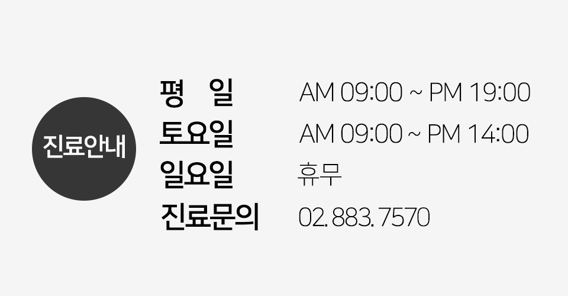
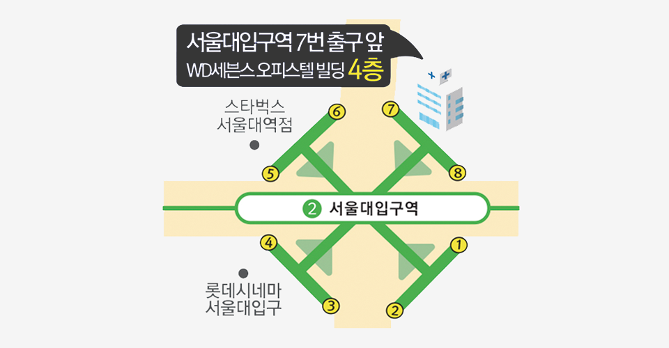
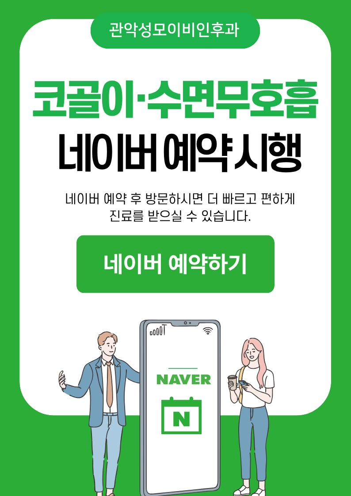
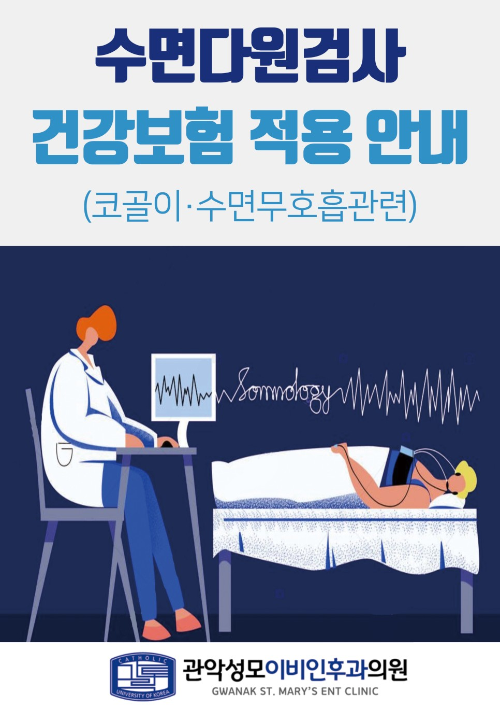

공지사항
커뮤니티 더보기


안녕하세요. 관악성모이비인후과입니다.
본원에서는 주민들의 귀, 코, 목 질환을 치료 / 예방 / 관리하고 있습니다.
편안하고 따듯한 분위기속에서 환자분들이 편리하게 이용할 수 있는 진료를 제공하겠습니다.
관악성모이비인후과
자주 묻는 질문들
01 관악성모이비인후과 진료시간
- 평 일 : 09:00 ~ 19:00
토요일: 09:00 ~ 14:00 (점심시간 없음)
점심시간 : 13:00 ~ 14:00
일요일 : 휴진
- 평 일 : 09:00 ~ 19:00
02 찾아오시는 길
- 서울 관악구 관악로 186, WD세븐스오피스텔 4층 서울대입구역 7번 출구 앞
도보로 오실 때 : 서울대입구역 7번출구로 나오시면 우측에 "모자가게"가 바로 있습니다. 모자 가게 옆에 전면이 유리로 되어 있는 신축 건물이 있는데, 건물 사이에 건물 출입로가 있습니다. 출입로를 따라 들어오시면 엘리베이터가 있어 4층으로 오시면 됩니다.
자동차로 오실 때 : 건물 뒷편 주차타워에 기계식 주차가 가능한데, 네비게이션으로 삼미옥을 치고 오시면 삼미옥 맞은편 주차타워에 주차하실 수 있습니다. 단, 승용차만 주차가 가능하면 SUV는 주차가 어렵습니다. 병원 방문 시 주차 무료입니다.
- 서울 관악구 관악로 186, WD세븐스오피스텔 4층 서울대입구역 7번 출구 앞
03 관악성모이비인후과 특화진료
- 관악성모이비인후과는 우수한 진료서비스를 제공하기 위해 대학병원급 첨단시설을 갖추고 있어 정확한 진단이 가능합니다. 청력, 어지러움, 귀불편감, 보청기, 코골이, 수면다원검사, 초음파, CT, 편도결석제거, 천식, 감기, 비염, 축농증, 중이염, 영양수액 클리닉 등 귀, 코, 목 전반에 걸쳐서 진료를 하고 있습니다. 1인실 수면다원검사 시설을 갖추고 있어 보다 쾌적하게 검사 받으실 수 있습니다. 필요시 양압기대여를 진행하고 있습니다.
청각장애진단검사도 진행하며 장애진단에 이은 국가지원 보청기 관련해서도 연속해서 진행해드리고 있습니다.
- 관악성모이비인후과는 우수한 진료서비스를 제공하기 위해 대학병원급 첨단시설을 갖추고 있어 정확한 진단이 가능합니다. 청력, 어지러움, 귀불편감, 보청기, 코골이, 수면다원검사, 초음파, CT, 편도결석제거, 천식, 감기, 비염, 축농증, 중이염, 영양수액 클리닉 등 귀, 코, 목 전반에 걸쳐서 진료를 하고 있습니다. 1인실 수면다원검사 시설을 갖추고 있어 보다 쾌적하게 검사 받으실 수 있습니다. 필요시 양압기대여를 진행하고 있습니다.